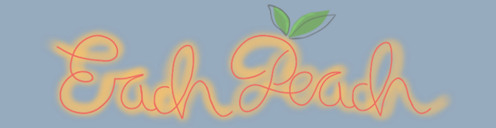
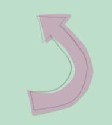

Welcome to Each Peach...
Welcome to , where I am going to bring you along with me on my journey to get fit and healthy, not just physically, but also mentally and financially.
You will have the opportunity to get to know me a little better in the "Get to know me..." section below, but for now let me set my intentions for this site:
- To hold myself to account by sharing my progress with you all
- To be open and honest about what's working for me and what's not
- To share my struggles and triumphs
- To create a supportive community of like-minded people
Get to know me...
Hi, I'm Ella. That's me up there... at least that's what I look like when I close my eyes. In reality, that version of me is a very distant memory.
Let's be clear, after over 15 years, one beautiful baby girl, a badly broken leg, and a lot more white hairs later, I don't realistically expect to look or feel like I did when that picture was taken.
The thought of a few more crows feet and white hairs is something that I can come to terms with, but the state of my physical and mental health is another matter. I have reached a point where it hurts just to exist (in so many ways), and I have had enough. I am tired of it seeming as if I am going to climb a mountain just to leave the house, and enough is enough.
I have decided that I am not going to be this person any more. I am taking my future into my own hands, and am intent on improving my physical, mental and financial wellbeing before my daughter is old enough to remember the stat I'm currently in.
I want this page to be a way of holding myself accountable, and being vulnerable in order to help myself (and hopefully some others along the way).
So here is me being vulnerable... one of the few full photographs of me since my daughter was born, and one that makes me want to cry when I look at it.